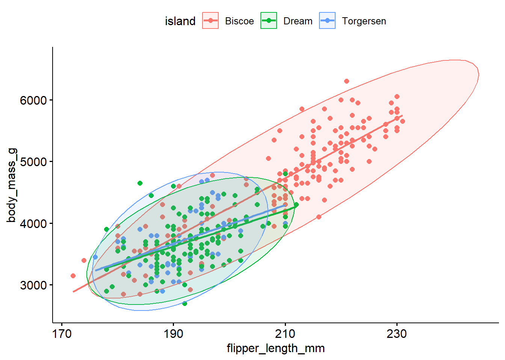

library(tidyverse) # general uselibrary(ggdist) # for the "half-violin" plot (stat_slab)library(ggpubr) # ggscatterlibrary(scales) # axes labelinglibrary(sjPlot) # side by side barcharts with numberslibrary(gtsummary) # regression tablespen <- palmerpenguins::penguins
Motivation - Ex. 1
Below are the admissions figures for Fall 1973 at UC Berkeley.
Table of admissions rates at UC Berkeley in 1973
Applicants
Admitted
Total
12,763
41%
Men
8,442
44%
Women
4,321
35%
Is there evidence of gender bias in college admissions? Do you think a difference of 35% vs 44% is too large to be by chance?
Department specific data
The table of admissions rates for the 6 largest departments show a different story.
All
Men
Women
Department
Applicants
Admitted
Applicants
Admitted
Applicants
Admitted
A
933
64%
825
62%
108
82%
B
585
63%
560
63%
25
68%
C
918
35%
325
37%
593
34%
D
792
34%
417
33%
375
35%
E
584
25%
191
28%
393
24%
F
714
6%
373
6%
341
7%
Total
4526
39%
2691
45%
1835
30%
After adjusting for features such as size and competitiveness of the department, the pooled data showed a “small but statistically significant bias in favor of women”
Motivation Ex. 2
Can we predict penguin body mass from the flipper length?
ggscatter(pen, x="flipper_length_mm", y ="body_mass_g", add ="reg.line", color ="island", ellipse =TRUE)

Probably, but the relationship between flipper length and body mass changes depending on what island they are found on.
Moderation
Moderation occurs when the relationship between two variables depends on a third variable.
The third variable is referred to as the moderating variable or simply the moderator.
The moderator affects the direction and/or strength of the relationship between the explanatory (\(x\)) and response (\(y\)) variable.
So we need a model that can allow for this difference in slope.
Stratification
Stratified models fit the regression equations (or any other bivariate analysis) for each subgroup of the population.
The mathematical model describing the relationship between body mass (\(Y\)), and flipper length (\(X\)) for each of the species separately would be written as follows:
This is the unique and powerful feature of stratified models.
Consequences
Each model is only fit on the amount of data in that particular subset.
Each model has 3 parameters that need to be estimated: \(\beta_{0}, \beta_{1}\), and \(\sigma^{2}\)
Total of 9 for the three models.
The more parameters that need to be estimated, the more data we need.
Identifying a Moderator
When testing a potential moderator, we are asking the question whether there is an association between two constructs, but separately for different subgroups within the sample.
We consider 3 scenarios demonstrating how a third variable can modify the relationship between the original two variables.
Significant –> Non-Significant
Significant relationship at bivariate level
We expect the effect to exist in the entire population
Within at least one level of the third variable the strength of the relationship changes
P-value is no longer significant within at least one subgroup
Non-Significant –> Significant
Non-significant relationship at bivariate level
We do not expect the effect to exist in the entire population
Within at least one level of the third variable the relationship becomes significant
P-value is now significant within at least one subgroup
Change in Direction of Association
Significant relationship at bivariate level
We expect the effect to exist in the entire population
Within at least one level of the third variable the direction of the relationship changes
Means change order, positive to negative correlation etc.
addhealth$female_c: Male
Pearson's Chi-squared test
data: x$eversmoke_c and x$genhealth
X-squared = 19.455, df = 4, p-value = 0.0006395
------------------------------------------------------------------------------------------------------------------------------------------------------
addhealth$female_c: Female
Pearson's Chi-squared test
data: x$eversmoke_c and x$genhealth
X-squared = 19.998, df = 4, p-value = 0.0004998
P-value still <.0001 in each group
The relationship between smoking status and general health is significant in both the main effects and the stratified model. The distribution of smoking status across general health categories does not differ between females and males. Gender is not a moderator for this analysis.